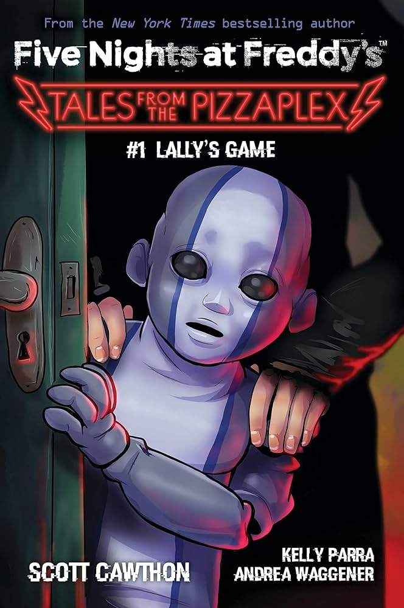

*Lally's Game* é o primeiro livro da coleção *Tales from the Pizzaplex*. A história acompanha um grupo de jovens que jogam um misterioso jogo de arcade, onde descobrem que as consequências do jogo podem ser mais reais do que imaginam, envolvendo perigos e mistérios. O livro explora uma nova faceta do universo de *Five Nights at Freddy's*.
O protagonista se vê preso em uma situação onde a realidade e o jogo se confundem. Enquanto tenta escapar, ele encontra outros jogadores e animatrônicos estranhos que o ajudam a desvendar segredos da pizzaria e do jogo.